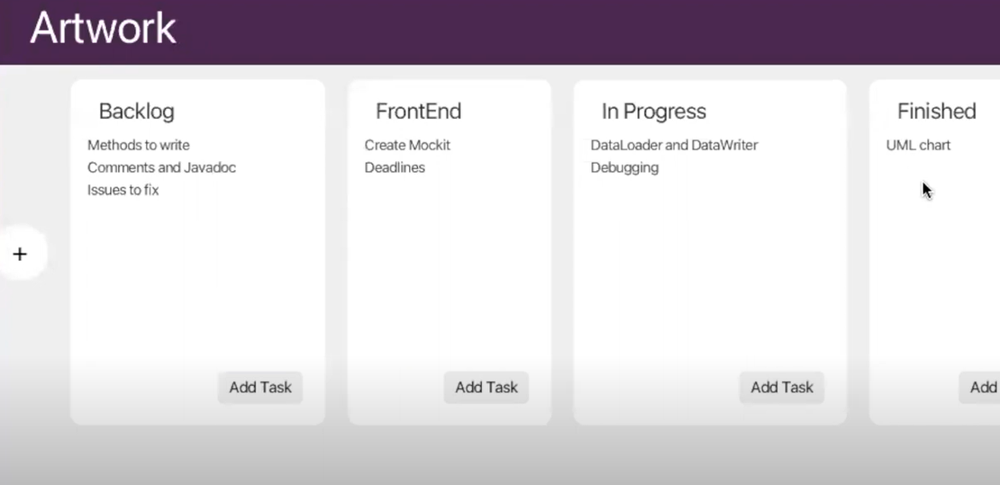

Project Manager
NOVEMBER 2023
During my Software Engineering course, my team and I developed a Project Manager application inspired by SCRUM principles.

View the code here
This project was a turning point for me in understanding the link between backend and frontend development as I was previously limited to console-based code.
KEY TAKEAWAYS:
It provided essential lessons in team dynamics and project organization as my team and I meticulously crafted a UML, utilized iterative sprints, presented many status reports to a higherup, and navigated/resolved conflicts.